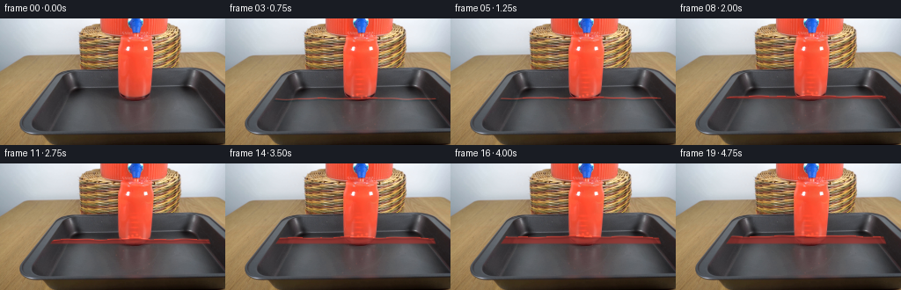
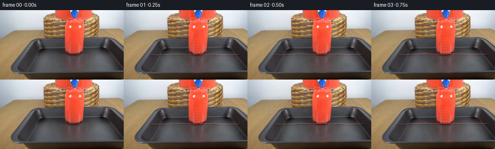
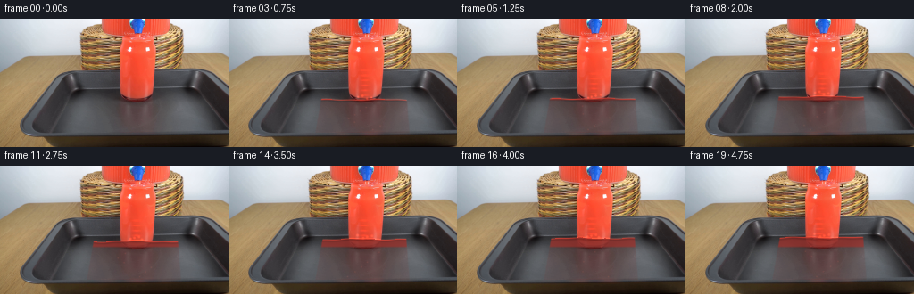
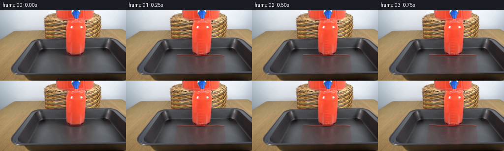
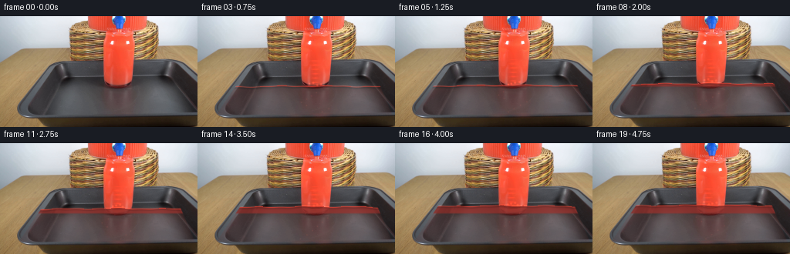
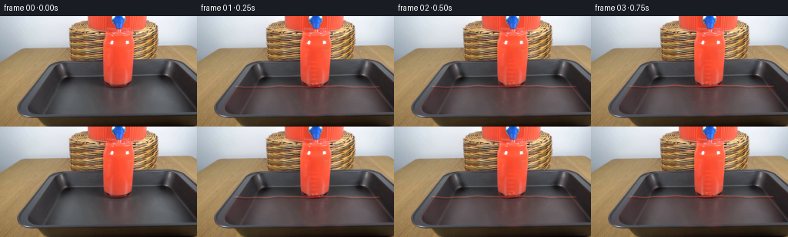

CODING AGENTS AS PIXEL WORLD MODELS
traex/DeepSeek-V4.1-Flash · 0089
点击播放 · 原生 RGB 像素
此结果可播放，但该运行尚未通过最终提交审核。页面展示不代表评测通过。
逐轮保存的候选
回放视频、检查图与代码变化。
每份候选均可单独播放。实际图片检查记录在下方工具轨迹中。
候选 01播放与检查图
点击播放 · 原生 RGB 像素


展开代码变化
--- 上一保存版本
+++ 本次保存版本
@@ -0,0 +1,248 @@
+from pathlib import Path
+
+import cv2
+import numpy as np
+from PIL import Image
+
+import artifact_io
+
+
+ROOT = Path(__file__).resolve().parent
+FRAME_COUNT = 20
+HEIGHT = 144
+WIDTH = 256
+
+
+def smoothstep(value):
+ value = np.clip(value, 0.0, 1.0)
+ return value * value * (3.0 - 2.0 * value)
+
+
+def soft_region(distance, feather=1.25):
+ return np.clip(0.5 + distance / (2.0 * feather), 0.0, 1.0)
+
+
+def glass_boundaries(y):
+ left = 78.0 - 0.72 * (y - 58.0)
+ right = 228.0 + 0.40 * (y - 58.0)
+ return left, right
+
+
+def make_masks(image):
+ yy, xx = np.mgrid[:HEIGHT, :WIDTH]
+ r = image[:, :, 0].astype(np.float32)
+ g = image[:, :, 1].astype(np.float32)
+ b = image[:, :, 2].astype(np.float32)
+
+ red = (
+ (r > 105.0)
+ & (r > g + 30.0)
+ & (r > b + 22.0)
+ & (xx >= 84)
+ & (xx <= 211)
+ & (yy <= 92)
+ )
+ red_mask = cv2.GaussianBlur(red.astype(np.float32), (3, 3), 0.55)
+
+ dispenser = red_mask * np.clip((58.0 - yy) / 2.0, 0.0, 1.0)
+ stream = red_mask * np.clip((yy - 55.0) / 2.0, 0.0, 1.0)
+ stream *= np.clip((93.0 - yy) / 2.0, 0.0, 1.0)
+ stream *= np.clip((xx - 129.0) / 2.0, 0.0, 1.0)
+ stream *= np.clip((177.0 - xx) / 2.0, 0.0, 1.0)
+
+ left, right = glass_boundaries(yy.astype(np.float32))
+ side_fade = np.minimum(
+ np.clip((xx - left - 1.5) / 1.5, 0.0, 1.0),
+ np.clip((right - xx - 1.5) / 1.5, 0.0, 1.0),
+ )
+ glass_region = (
+ (yy >= 58.0)
+ & (yy <= 127.0)
+ & (xx >= left)
+ & (xx <= right)
+ )
+ glass_region = cv2.GaussianBlur(glass_region.astype(np.float32), (3, 3), 0.45)
+ glass_region *= side_fade
+
+ return red_mask, dispenser, stream, glass_region
+
+
+def render_frame(base, masks, frame_index):
+ if frame_index == 0:
+ return base.copy()
+
+ _, dispenser_mask, stream_mask, glass_mask = masks
+ yy, xx = np.mgrid[:HEIGHT, :WIDTH]
+ frame = base.astype(np.float32)
+ time = frame_index / (FRAME_COUNT - 1)
+ phase = frame_index / 4.0
+
+ # Liquid inside the dispenser catches moving, low-contrast caustics.
+ caustic = (
+ 0.55 * np.sin(0.105 * xx + 0.17 * yy - 2.4 * phase)
+ + 0.30 * np.sin(0.24 * xx - 0.09 * yy + 1.7 * phase)
+ + 0.15 * np.sin(0.42 * xx + 0.22 * yy - 3.3 * phase)
+ )
+ dispenser_gain = 1.0 + 0.022 * caustic
+ frame += (
+ dispenser_mask[:, :, None]
+ * (frame * (dispenser_gain[:, :, None] - 1.0))
+ )
+ sheen = np.exp(
+ -0.5
+ * (
+ (xx - (137.0 + 3.0 * np.sin(0.7 * phase))) / 2.3
+ )
+ ** 2
+ )
+ sheen *= np.exp(-0.5 * ((yy - 27.0) / 19.0) ** 2)
+ frame += (
+ dispenser_mask[:, :, None]
+ * sheen[:, :, None]
+ * np.array([26.0, 5.0, 2.0], dtype=np.float32)
+ )
+
+ # The falling stream has a fine downward-moving luminance pattern.
+ flow = (
+ 0.62 * np.sin(1.34 * yy - 9.8 * phase + 0.46 * np.sin(0.42 * xx))
+ + 0.24 * np.sin(2.50 * yy - 14.5 * phase + 0.17 * xx)
+ + 0.14 * np.sin(0.91 * xx + 0.22 * yy - 5.1 * phase)
+ )
+ flow_alpha = stream_mask * (0.033 + 0.018 * flow)
+ stream_color = np.array([252.0, 87.0, 62.0], dtype=np.float32)
+ frame += flow_alpha[:, :, None] * (stream_color - frame)
+
+ moving_edge = np.exp(-0.5 * ((xx - (151.0 + 2.0 * np.sin(0.9 * phase))) / 3.0) ** 2)
+ moving_edge *= np.sin(1.12 * yy - 8.3 * phase)
+ moving_edge = np.maximum(moving_edge, 0.0) * stream_mask
+ frame += (
+ moving_edge[:, :, None]
+ * np.array([30.0, 5.0, 2.0], dtype=np.float32)
+ )
+
+ # The existing liquid surface is around y=91. It rises smoothly during the shot.
+ level = 91.0 - 9.0 * smoothstep(time)
+ surface = (
+ level
+ + 0.55 * np.sin(0.095 * xx + 1.15 * phase)
+ + 0.32 * np.sin(0.23 * xx - 2.1 * phase)
+ + 0.00012 * (xx - 151.0) ** 2
+ )
+ interior = glass_mask * (yy > surface) * (yy < 127.5)
+
+ if level < 90.6:
+ sample_y = np.clip(yy + 9, 0, HEIGHT - 1)
+ source_texture = base[sample_y, xx].astype(np.float32)
+ source_lum = source_texture.mean(axis=2)
+ brightness = np.clip(0.70 + source_lum / 145.0, 0.72, 1.18)
+ liquid = np.empty_like(source_texture)
+ liquid[:, :, 0] = 117.0 * brightness
+ liquid[:, :, 1] = 34.0 * brightness
+ liquid[:, :, 2] = 30.0 * brightness
+ liquid += 0.17 * source_texture
+ new_band = interior * np.clip((91.7 - yy) / 2.0, 0.0, 1.0)
+ frame += new_band[:, :, None] * (liquid - frame) * 0.84
+
+ # Gentle circulation and transmitted red light remain visible in the filled glass.
+ liquid_wave = (
+ np.sin(0.14 * xx + 0.25 * yy - 3.7 * phase)
+ + 0.45 * np.sin(0.31 * xx - 0.15 * yy + 2.3 * phase)
+ )
+ frame += (
+ interior[:, :, None]
+ * (0.018 * liquid_wave[:, :, None])
+ * np.array([62.0, 20.0, 16.0], dtype=np.float32)
+ )
+
+ # Meniscus: a narrow bright edge with a darker shadow immediately beneath it.
+ near_surface = np.exp(-0.5 * ((yy - surface) / 0.62) ** 2)
+ near_surface *= glass_mask
+ frame += (
+ near_surface[:, :, None]
+ * np.array([62.0, 15.0, 8.0], dtype=np.float32)
+ )
+ below_surface = np.exp(-0.5 * ((yy - surface - 1.55) / 0.82) ** 2)
+ below_surface *= glass_mask
+ frame -= (
+ below_surface[:, :, None]
+ * np.array([17.0, 6.0, 5.0], dtype=np.float32)
+ )
+
+ # Expanding elliptical ripples at the point where the stream meets the liquid.
+ impact_y = float(np.interp(151.0, np.arange(WIDTH), surface[90]))
+ for ring_index in range(3):
+ ring_age = (0.24 * frame_index + ring_index / 3.0) % 1.0
+ radius_x = 5.0 + 18.0 * ring_age
+ radius_y = 1.0 + 3.2 * ring_age
+ radial = np.sqrt(
+ ((xx - 152.5) / radius_x) ** 2
+ + ((yy - impact_y - 1.0) / radius_y) ** 2
+ )
+ ring = np.exp(-0.5 * ((radial - 1.0) / 0.13) ** 2)
+ ring *= np.clip((1.0 - ring_age) * 1.6, 0.0, 1.0)
+ ring *= np.clip((yy - impact_y + 2.2) / 2.0, 0.0, 1.0)
+ ring *= glass_mask
+ frame += (
+ ring[:, :, None]
+ * (0.12 + 0.035 * np.sin(2.0 * np.pi * ring_age))
+ * np.array([66.0, 14.0, 8.0], dtype=np.float32)
+ )
+
+ # A few tiny impact beads and bubbles break up the otherwise perfect stream.
+ for bead_index in range(4):
+ cycle = (frame_index / 5.0 + bead_index * 0.27) % 1.0
+ bead_x = 152.5 + (bead_index - 1.5) * (4.0 + 2.0 * cycle)
+ bead_y = impact_y - 1.0 - 4.2 * cycle
+ bead = np.exp(
+ -0.5
+ * (
+ ((xx - bead_x) / 0.85) ** 2
+ + ((yy - bead_y) / 0.85) ** 2
+ )
+ )
+ frame += bead[:, :, None] * np.array([75.0, 18.0, 10.0], dtype=np.float32)
+
+ for bubble_index in range(7):
+ travel = (frame_index / 7.0 + bubble_index * 0.143) % 1.0
+ bubble_x = 133.0 + (bubble_index * 7.3) % 37.0 + 1.2 * np.sin(
+ 1.8 * phase + bubble_index
+ )
+ bubble_y = 124.0 - travel * (124.0 - impact_y - 4.0)
+ bubble = np.exp(
+ -0.5
+ * (
+ ((xx - bubble_x) / 0.62) ** 2
+ + ((yy - bubble_y) / 0.62) ** 2
+ )
+ )
+ bubble *= interior
+ frame += bubble[:, :, None] * np.array([18.0, 6.0, 4.0], dtype=np.float32)
+
+ # A restrained red reflection on the tray keeps the glass visually seated.
+ tray_reflection = np.exp(-0.5 * ((xx - 154.0) / 31.0) ** 2)
+ tray_reflection *= np.exp(-0.5 * ((yy - 129.0) / 1.7) ** 2)
+ tray_reflection *= 0.55 + 0.45 * np.sin(0.18 * xx - 2.6 * phase)
+ frame += (
+ tray_reflection[:, :, None]
+ * np.array([28.0, 7.0, 3.0], dtype=np.float32)
+ )
+
+ # A very small exposure variation keeps the locked-off plate photographic.
+ exposure = 1.0 + 0.0018 * np.sin(1.3 * phase + 0.4)
+ frame *= exposure
+ return np.clip(frame, 0.0, 255.0).astype(np.uint8)
+
+
+def main():
+ base = np.asarray(Image.open(ROOT / "first_frame.png").convert("RGB"), dtype=np.uint8)
+ assert base.shape == (HEIGHT, WIDTH, 3)
+ masks = make_masks(base)
+ frames = np.empty((FRAME_COUNT, HEIGHT, WIDTH, 3), dtype=np.uint8)
+ for frame_index in range(FRAME_COUNT):
+ frames[frame_index] = render_frame(base, masks, frame_index)
+ assert np.array_equal(frames[0], base)
+ artifact_io.save(frames, ROOT)
+
+
+if __name__ == "__main__":
+ main()
候选 02播放与检查图
点击播放 · 原生 RGB 像素


展开代码变化
--- 上一保存版本
+++ 本次保存版本
@@ -23,8 +23,8 @@
def glass_boundaries(y):
- left = 78.0 - 0.72 * (y - 58.0)
- right = 228.0 + 0.40 * (y - 58.0)
+ left = 107.0 - 0.18 * (y - 58.0)
+ right = 199.0 + 0.08 * (y - 58.0)
return left, right
@@ -121,7 +121,7 @@
)
# The existing liquid surface is around y=91. It rises smoothly during the shot.
- level = 91.0 - 9.0 * smoothstep(time)
+ level = 91.0 - 11.0 * smoothstep(time)
surface = (
level
+ 0.55 * np.sin(0.095 * xx + 1.15 * phase)
@@ -143,6 +143,13 @@
new_band = interior * np.clip((91.7 - yy) / 2.0, 0.0, 1.0)
frame += new_band[:, :, None] * (liquid - frame) * 0.84
+ # The glass already contains dark liquid in the source frame. A restrained
+ # red transmission tint makes that volume read while preserving its shadows.
+ body_alpha = 0.11 + 0.13 * np.exp(-np.maximum(yy - level, 0.0) / 17.0)
+ body_alpha *= interior
+ body_color = np.array([122.0, 45.0, 39.0], dtype=np.float32)
+ frame += body_alpha[:, :, None] * (body_color - frame)
+
# Gentle circulation and transmitted red light remain visible in the filled glass.
liquid_wave = (
np.sin(0.14 * xx + 0.25 * yy - 3.7 * phase)
候选 03播放与检查图
点击播放 · 原生 RGB 像素

展开代码变化
--- 上一保存版本
+++ 本次保存版本
@@ -23,8 +23,8 @@
def glass_boundaries(y):
- left = 107.0 - 0.18 * (y - 58.0)
- right = 199.0 + 0.08 * (y - 58.0)
+ left = 69.0 - 0.68 * (y - 58.0)
+ right = 225.0 + 0.42 * (y - 58.0)
return left, right
候选 04播放与检查图
点击播放 · 原生 RGB 像素


展开代码变化
--- 上一保存版本
+++ 本次保存版本
@@ -234,9 +234,6 @@
* np.array([28.0, 7.0, 3.0], dtype=np.float32)
)
- # A very small exposure variation keeps the locked-off plate photographic.
- exposure = 1.0 + 0.0018 * np.sin(1.3 * phase + 0.4)
- frame *= exposure
return np.clip(frame, 0.0, 255.0).astype(np.uint8)
候选 05播放与检查图
可观测工具轨迹
实际执行的命令与返回图片。
命令 1exit 0
/bin/bash -c "pwd && rg --files -g '"'!*__pycache__*'"' -g '"'!*.mp4'"' | sed -n '1,200p'"
命令 2exit 0
/bin/bash -c "sed -n '1,240p' prompt.txt"
命令 3exit 0
/bin/bash -c "sed -n '1,280p' GENERATION_RULES.md"
命令 4exit 0
/bin/bash -c 'ls -lah && file first_frame.png && identify first_frame.png 2>/dev/null || true'
命令 5exit 0
/bin/bash -c "sed -n '1,260p' artifact_io.py"
命令 6exit 0
/bin/bash -c "sed -n '1,260p' player_template.html"
命令 7exit 0
/bin/bash -c "python - <<'PY'
from PIL import Image
import numpy as np
im=np.array(Image.open('first_frame.png').convert('RGB'))
print(im.shape, im.dtype, im.min(), im.max())
print('corners', im[0,0], im[0,-1], im[-1,0], im[-1,-1])
print('mean', im.mean((0,1)), 'std', im.std((0,1)))
# basic row/column luminance segments
lum=im.mean(2)
for y in range(0,144,8):
print(y, np.round(lum[y].reshape(-1,16).mean(1),1).tolist())
PY"命令 8exit 0
/bin/bash -c "python - <<'PY'
try:
import cv2; print('cv2',cv2.__version__)
except Exception as e: print('no cv2',e)
try:
import scipy; print('scipy',scipy.__version__)
except Exception as e: print('no scipy',e)
try:
import sklearn; print('sklearn',sklearn.__version__)
except Exception as e: print('no sklearn',e)
PY"命令 9exit 0
/bin/bash -c "python - <<'PY'
from PIL import Image
import numpy as np
from sklearn.cluster import KMeans
im=np.array(Image.open('first_frame.png').convert('RGB'))
x=im.reshape(-1,3)
km=KMeans(n_clusters=14, random_state=0, n_init=10).fit(x[::5])
pal=km.cluster_centers_.round().astype(int)
lab=km.predict(x).reshape(im.shape[:2])
counts=np.bincount(lab.ravel(),minlength=len(pal))
for i,(c,n) in enumerate(zip(pal,counts)):
print(i, c.tolist(), n, f'{n/x.shape[0]:.3f}')
# Palette ASCII using distinct chars
chars='0123456789ABCD'
print('palette map 4x4 blocks')
for by in range(0,144,4):
line=''
for bx in range(0,256,4):
q=lab[by:by+4,bx:bx+4].ravel()
line += chars[np.bincount(q,minlength=14).argmax()]
print(line)
PY"命令 10exit 0
/bin/bash -c "python - <<'PY'
from PIL import Image
import numpy as np
im=np.array(Image.open('first_frame.png').convert('RGB'))
# save upscaled nearest and contrast enhanced for optional local checks
Image.fromarray(im).resize((1024,576),Image.Resampling.NEAREST).save('.tmp/source_4x.png')
Image.fromarray(im).resize((1024,576),Image.Resampling.LANCZOS).save('.tmp/source_smooth.png')
# red mask extents/connected comps
import cv2
red=(im[:,:,0].astype(float)>1.25*im[:,:,1]) & (im[:,:,0].astype(float)>1.3*im[:,:,2]) & (im[:,:,0]>110)
n,l,st,cent=cv2.connectedComponentsWithStats(red.astype('uint8'),8)
for i in range(1,n):
x,y,w,h,a=st[i];
if a>10: print(i,'bbox',x,y,w,h,'area',a,'centroid',np.round(cent[i],1))
# edges Hough lines
g=cv2.cvtColor(im,cv2.COLOR_RGB2GRAY)
ed=cv2.Canny(g,30,80)
ls=cv2.HoughLinesP(ed,1,np.pi/180,threshold=20,minLineLength=15,maxLineGap=4)
print('lines')
for l in ls[:60,0]: print(l.tolist())
PY"命令 11exit 0
/bin/bash -c "python - <<'PY'
from PIL import Image
import numpy as np
im=np.array(Image.open('first_frame.png').convert('RGB'))
# print 16x16 patch average maps of key channels and brightness, char legend
lum=im.mean(2)
redscore=im[:,:,0]-0.6*im[:,:,1]-0.4*im[:,:,2]
for name,a in [('lum',lum),('red',redscore)]:
print('\\n',name)
lo,hi=np.percentile(a,[3,97])
chars=' .,:;irsXA253hMHGS#9B&@'
for y in range(0,144,4):
line=''
for x in range(0,256,4):
v=np.median(a[y:y+4,x:x+4])
if name=='red': vv=np.clip((v-10)/100,0,1)
else: vv=np.clip((v-lo)/(hi-lo),0,1)
line+=chars[int(vv*(len(chars)-1))]
print(line)
PY"命令 12exit 0
/bin/bash -c "python - <<'PY'
from PIL import Image
import numpy as np
im=np.array(Image.open('first_frame.png').convert('RGB')).astype(float)
R,G,B=im.transpose(2,0,1)
# category by nearest hand palette
pal=np.array([
[232,236,242], # white bg W
[175,150,110], # tan T
[90,90,92], # gray g
[40,35,35], # dark D
[235,85,60], # red R
[155,110,70], # brown B
[245,180,135], # skin/peach P
[80,120,200], # blue U
])
chars='WTgDRBPU'
# sample every 2x2 median color then nearest normalized
for y in range(0,144,3):
line=''
for x in range(0,256,3):
c=np.median(im[y:min(y+3,144),x:min(x+3,256)].reshape(-1,3),axis=0)
d=((pal-c)**2).sum(1)
line+=chars[d.argmin()]
print(f'{y:3d} '+line)
PY"命令 13exit 0
/bin/bash -c "python - <<'PY'
from PIL import Image
import numpy as np
im=np.array(Image.open('first_frame.png').convert('RGB'))
for y in [0,5,10,15,20,25,30,35,40,45,50,55,60,65,70,75,80,85,90,95,100,105,110,115,120,125,130,135,140,143]:
print('\\ny',y)
for x in range(0,256,8):
c=np.median(im[max(0,y-1):min(144,y+2),x:min(256,x+8)].reshape(-1,3),axis=0).astype(int)
print(f'{x:3d}:{c[0]:3d},{c[1]:3d},{c[2]:3d}',end=' ')
print()
PY"命令 14exit 0
/bin/bash -c "python - <<'PY'
from PIL import Image
import numpy as np, cv2
im=np.array(Image.open('first_frame.png').convert('RGB'))
R,G,B=im.transpose(2,0,1).astype(float)
red=(R>120)&(R>1.25*G)&(R>1.25*B)
print('row extents red')
for y in range(144):
xs=np.where(red[y])[0]
if len(xs):
# runs >2
d=np.diff(xs); starts=np.r_[0,np.where(d>1)[0]+1]; ends=np.r_[np.where(d>1)[0],len(xs)-1]
runs=[(int(xs[s]),int(xs[e])) for s,e in zip(starts,ends) if xs[e]-xs[s]>=2]
if y%2==0: print(y, runs)
# highly saturated red score and bbox
score=R-(G+B)/2
for t in [20,40,60,80,100,120]:
m=score>t
ys,xs=np.where(m)
print('score>',t,'bbox',xs.min(),ys.min(),xs.max(),ys.max(),'n',len(xs))
# horizontal dominant colors at selected rows, detailed 4 px means
for y in [0,8,16,24,32,40,48,56,64,72,80,88,96,104,112,120,128,136,143]:
print('ROW',y)
for x in range(0,256,4):
c=im[y:y+1,x:x+4].mean((0,1)).astype(int)
print(f'{c[0]:02x}{c[1]:02x}{c[2]:02x}',end=' ')
print()
PY"命令 15exit 0
/bin/bash -c "python - <<'PY'
from PIL import Image
import numpy as np, cv2
im=np.array(Image.open('first_frame.png').convert('RGB'))
g=cv2.cvtColor(im,cv2.COLOR_RGB2GRAY)
# bilateral / edges
ed=cv2.Canny(cv2.GaussianBlur(g,(3,3),0),25,70)
chars=' .:-=+*#%@'
for y in range(0,144,2):
line=''
for x in range(0,256,2):
v=ed[y:y+2,x:x+2].max()
line += '#' if v else ' '
print(f'{y:3d} '+line)
PY"命令 16exit 0
/bin/bash -c "python - <<'PY'
from PIL import Image
import numpy as np
im=np.array(Image.open('first_frame.png').convert('RGB'))
# display 32x18 blocks with color emoji-ish categories based on HSV/hue
import cv2
hsv=cv2.cvtColor(im,cv2.COLOR_RGB2HSV)
for y in range(0,144,4):
line=''
for x in range(0,256,4):
p=im[y:y+4,x:x+4].reshape(-1,3).mean(0)
h,s,v=cv2.cvtColor(np.uint8([[p]]),cv2.COLOR_RGB2HSV)[0,0]
if s>110 and (h<8 or h>175) and v>100: c='R'
elif s>90 and 8<=h<25 and v>100: c='o'
elif s>40 and 15<=h<35 and v>70: c='t'
elif v>210 and s<25: c='W'
elif v>160: c='.'
elif v>100: c='g'
elif v>55: c='d'
else: c='#'
line+=c
print(line)
PY"命令 17exit 0
/bin/bash -c "python - <<'PY'
from PIL import Image
import numpy as np
im=np.array(Image.open('first_frame.png').convert('RGB'))
# print structured rows every 6 px with 8 px windows in ANSI? plain hex. better classify by luminance and red
for y in range(0,144,4):
print('Y%03d'%y,end=' ')
for x in range(0,256,8):
c=im[y:min(y+4,144),x:min(x+8,256)].reshape(-1,3).mean(0)
r,g,b=c
if r>g*1.3 and r>b*1.25 and r>100: s='R'
elif r>g*1.15 and g>b*1.15 and r>90: s='T'
elif r>g*1.08 and g>b*1.08 and r>70: s='t'
elif max(c)>200: s='W'
elif max(c)>150: s='l'
elif max(c)>100: s='m'
elif max(c)>60: s='d'
else: s='K'
print(s,end='')
print()
PY"命令 18exit 0
/bin/bash -c "python - <<'PY'
from PIL import Image
import numpy as np, cv2
im=np.array(Image.open('first_frame.png').convert('RGB'))
# Print raw downsampled categories at 4x4 with richer chars based on HSV
hsv=cv2.cvtColor(im,cv2.COLOR_RGB2HSV)
# kmeans 20 and annotate each cluster with avg coords/bbox
from sklearn.cluster import KMeans
x=im.reshape(-1,3).astype(np.float32)
km=KMeans(20,random_state=3,n_init=8).fit(x[::3])
lab=km.predict(x).reshape(144,256)
pal=km.cluster_centers_.astype(int)
print('CLUSTERS')
for i,c in enumerate(pal):
m=lab==i; ys,xs=np.where(m)
print(i, c.tolist(), int(m.sum()), 'bbox', (xs.min(),ys.min(),xs.max(),ys.max()), 'cent', (round(xs.mean(),1),round(ys.mean(),1)))
# map each 4x4 most common cluster char. show cluster labels one-char
chars='0123456789ABCDEFGHIJ'
for y in range(0,144,4):
line=''
for x in range(0,256,4):
q=lab[y:y+4,x:x+4].ravel(); line+=chars[np.bincount(q,minlength=20).argmax()]
print(f'{y:03d} '+line)
PY"命令 19exit 0
/bin/bash -c "python - <<'PY'
from PIL import Image
import numpy as np
im=np.array(Image.open('first_frame.png').convert('RGB'))
# examine likely red regions center x=100..200 by row in compact run format threshold moderate, then print dominant quantized hex every 4 y
R,G,B=im.transpose(2,0,1).astype(int)
m=(R>100)&(R>G+35)&(R>B+25)
for y in range(144):
xs=np.where(m[y,80:215])[0]+80
if len(xs)>3:
print(f'{y:3d}: {xs.min()}..{xs.max()} n={len(xs)}')
PY"命令 20exit 0
/bin/bash -c "python - <<'PY'
from PIL import Image
import numpy as np
im=np.array(Image.open('first_frame.png').convert('RGB'))
# coarse image using terminal truecolor blocks; 64x36 each 4x4
for y in range(0,144,4):
s=''
for x in range(0,256,4):
c=im[y:y+4,x:x+4].reshape(-1,3).mean(0).astype(int)
s+=f'\\x1b[48;2;{c[0]};{c[1]};{c[2]}m '
s+='\\x1b[0m'
print(s)
PY"命令 21exit 0
/bin/bash -c "python - <<'PY'
from PIL import Image
import numpy as np, cv2
im=np.array(Image.open('first_frame.png').convert('RGB'))
g=cv2.cvtColor(im,cv2.COLOR_RGB2GRAY)
ed=cv2.Canny(cv2.GaussianBlur(g,(3,3),0),25,70)
for y in range(0,144,4):
xs=np.where(ed[y:y+4].max(0)>0)[0]
d=np.diff(xs); st=np.r_[0,np.where(d>1)[0]+1]; en=np.r_[np.where(d>1)[0],len(xs)-1]
runs=[]
for s,e in zip(st,en):
if xs[e]-xs[s]>=1:runs.append((int(xs[s]),int(xs[e])))
print(f'{y:3d}',runs)
PY"命令 22exit 0
/bin/bash -c "python - <<'PY'
from PIL import Image
import numpy as np
im=np.array(Image.open('first_frame.png').convert('RGB'))
# print region pixel values at critical boundaries
for y in [0,8,16,24,32,40,48,56,57,58,60,64,72,80,88,90,92,94,96,100,110,120,124,126,128,130,132,140,143]:
print('\\nY',y)
for x in [0,20,40,60,70,80,90,100,110,120,125,130,134,138,142,146,150,154,158,162,166,170,174,178,182,186,190,194,198,202,206,210,220,230,240,250,255]:
c=im[y,x]
print(f'{x}:{c[0]},{c[1]},{c[2]}',end=' ')
print()
PY"命令 23exit 0
/bin/bash -c "python - <<'PY'
from PIL import Image
import numpy as np
im=np.array(Image.open('first_frame.png').convert('RGB')).astype(float)
# text map based on color distances to manually selected local palette, one char per 2x2; list colors
pal={
'R':[250,85,60], # bright red liquid
'r':[210,75,58], # dark red liquid
'B':[50,100,220], # blue
'P':[252,115,92], # pink/peach
'T':[170,145,106], # tan/table
'D':[115,85,58], # dark tan
'G':[85,87,92], # gray metal
'K':[45,43,46], # dark metal
'W':[235,239,245], # white background
'L':[195,202,211], # light gray bg
'M':[140,137,137], # mid neutral
'k':[70,65,67], # dark glass
'p':[120,90,80], # reddish glass shadow
}
keys=list(pal); P=np.array([pal[k] for k in keys])
for y in range(0,144,2):
line=''
for x in range(0,256,2):
c=np.median(im[y:y+2,x:x+2].reshape(-1,3),0)
d=((P-c)**2).sum(1)
line+=keys[d.argmin()]
print(f'{y:03d} '+line)
PY"命令 24exit 0
/bin/bash -c "python - <<'PY'
from PIL import Image
import numpy as np, cv2
im=np.array(Image.open('first_frame.png').convert('RGB'))
g=cv2.cvtColor(im,cv2.COLOR_RGB2GRAY)
# x-gradient and y-gradient per row, selected x every 2
ed=cv2.Canny(cv2.GaussianBlur(g,(3,3),0),15,45)
print('edge map x=80..230, each 2 px')
for y in range(50,132,2):
line=''
for x in range(80,232,2):
line += '#' if ed[y:y+2,x:x+2].max() else ' '
print(f'{y:3d} {line}')
PY"命令 25exit 0
/bin/bash -c "python - <<'PY'
from PIL import Image
import numpy as np
im=np.array(Image.open('first_frame.png').convert('RGB')).astype(float)
# print image in sixel? no. use unicode braille edges for detailed 1px to terminal; maybe enough
import cv2
g=cv2.cvtColor(im.astype('uint8'),cv2.COLOR_RGB2GRAY)
ed=cv2.Canny(cv2.GaussianBlur(g,(3,3),0),20,60)
# braille 2x4 dots, x 0..255 y 0..143
for by in range(0,144,4):
line=''
for bx in range(0,256,2):
bits=0
for dy in range(4):
for dx in range(2):
if ed[by+dy,bx+dx]: bits |= 1<<(dy*2+dx)
# mapping dots: (0,0)=1,(0,1)=2,(1,0)=4,(1,1)=8,(2,0)=16,(2,1)=32,(3,0)=64,(3,1)=128
line+=chr(0x2800+bits)
print(line)
PY"命令 26exit 0
/bin/bash -c 'python generate.py'
命令 27exit 0
/bin/bash -c "python - <<'PY'
from PIL import Image
import numpy as np, os
base=np.array(Image.open('first_frame.png').convert('RGB'))
f0=np.array(Image.open('frames/00.png').convert('RGB'))
print('frame0 exact',np.array_equal(base,f0))
print('files',os.path.getsize('pixels.npz'),os.path.getsize('index.html'))
for i in [0,1,5,10,15,19]:
a=np.array(Image.open(f'frames/{i:02d}.png').convert('RGB')).astype(float)
d=np.abs(a-base.astype(float))
print(i,'mean diff',d.mean(),'max',d.max(),'changed px',(d.max(2)>1).sum())
PY"命令 28exit 0
/bin/bash -c "python - <<'PY'
from PIL import Image
import numpy as np
im=np.array(Image.open('first_frame.png').convert('RGB')).astype(int)
R,G,B=im.transpose(2,0,1)
for y in range(88,132):
s=''
for x in range(100,210):
v=R[y,x]-G[y,x]
s += 'R' if v>20 and R[y,x]>100 else ('r' if v>10 else ('t' if v>5 else ('.' if R[y,x]>65 else ' ')))
print(f'{y:3d} {s}')
PY"命令 29exit 0
/bin/bash -c "python - <<'PY'
from PIL import Image
import numpy as np
im=np.array(Image.open('first_frame.png').convert('RGB')).astype(float)
# At each row in glass, find strong color boundaries based on gradients averaged, report gradient peaks x 100..205
for y in [60,64,68,72,76,80,84,88,92,96,100,104,108,112,116,120,124,126,128]:
a=im[max(0,y-1):min(144,y+2)].mean(0)
grad=np.abs(np.diff(a,axis=0)).mean(1)
# local maxima > 2 separated
peaks=[]
for x in range(95,210):
if grad[x]>=grad[x-1] and grad[x]>grad[x+1] and grad[x]>2.0: peaks.append((x,round(float(grad[x]),1)))
peaks=sorted(peaks,key=lambda z:z[1],reverse=True)[:10]
print(y, sorted(peaks))
PY"命令 30exit 0
/bin/bash -c "python - <<'PY'
from PIL import Image
import numpy as np
im=np.array(Image.open('first_frame.png').convert('RGB')).astype(float)
# print each row median inside a narrow central x slice and edge color stats around glass
for y in range(56,131,2):
vals=[]
for x0,x1 in [(75,85),(90,100),(110,120),(130,140),(145,155),(160,170),(180,190),(200,210),(215,225)]:
vals.append(tuple(np.median(im[y,x0:x1],axis=0).astype(int)))
print(y, vals)
PY"命令 31exit 0
/bin/bash -c "python - <<'PY'
from PIL import Image
import numpy as np
im=np.array(Image.open('first_frame.png').convert('RGB')).astype(float)
# Print per-row strongest negative/positive gradients in RGB to locate glass outlines, x 50..240
for y in range(56,132,2):
grad=np.abs(np.diff(im[y],axis=0)).mean(1)
# nonmax top
cand=[]
for x in range(50,240):
if grad[x]>=grad[x-1] and grad[x]>grad[x+1] and grad[x]>4: cand.append((x,round(grad[x],1)))
print(f'{y:3d}',sorted(cand,key=lambda p:p[1],reverse=True)[:14])
PY"命令 32exit 0
/bin/bash -c "python - <<'PY'
from PIL import Image
import numpy as np, cv2
im=np.array(Image.open('first_frame.png').convert('RGB'))
# isolate center crop and save enlarged edge + labels? no visuals. analyze connected contours of dark glass silhouette
g=cv2.cvtColor(im,cv2.COLOR_RGB2GRAY)
# show vertical gradients at each x 100..210: top and bottom transitions, dark region edges
for x in [90,100,110,120,130,135,140,145,150,155,160,165,170,175,180,190,200,210,220,230]:
a=g[:,x].astype(float); grad=np.abs(np.diff(a))
peaks=sorted([(y,round(grad[y],1)) for y in range(50,140) if grad[y]>=grad[y-1] and grad[y]>grad[y+1] and grad[y]>5],key=lambda p:p[1],reverse=True)[:8]
print(x,peaks)
PY"命令 33exit 0
/bin/bash -c "python - <<'PY'
from PIL import Image
import numpy as np
im=np.array(Image.open('first_frame.png').convert('RGB')).astype(float)
# Use coordinates to infer glass contour: show dark region x boundaries threshold at each y
lum=im.mean(2)
for y in range(55,132,2):
m=lum[y]<115
xs=np.where(m)[0]
if len(xs):
print(y,int(xs.min()),int(xs.max()),'center dark',[(x,round(lum[y,x],0)) for x in [55,60,70,80,90,100,110,120,130,140,150,160,170,180,190,200,210,220,230,240] if lum[y,x]<115])
PY"命令 34exit 0
/bin/bash -c "python - <<'PY'
from PIL import Image
import numpy as np
import generate as g
base=np.array(Image.open('first_frame.png').convert('RGB'))
red,disp,stream,glass=g.make_masks(base)
for name,m in [('red',red),('disp',disp),('stream',stream),('glass',glass)]:
print(name, 'sum',m.sum(),'bbox',tuple(np.where(m>0.2)[1][[0,-1]]) if (m>0.2).any() else None)
for y in range(0,144,4):
xs=np.where(m[y]>0.2)[0]
if len(xs): print(' ',y,xs.min(),xs.max(),len(xs))
PY"命令 35exit 0
/bin/bash -c "python - <<'PY'
from PIL import Image
import numpy as np
base=np.array(Image.open('first_frame.png').convert('RGB')).astype(float)
for fi in [0,1,5,10,15,19]:
im=np.array(Image.open(f'frames/{fi:02d}.png').convert('RGB')).astype(float)
print('\\nframe',fi)
for y in [58,64,70,76,82,84,86,88,90,92,96,104,112,120,126,128]:
# means center fill x=80..228, stream x=134..173, dispenser x=90..205
fill=im[y,80:229].mean(0)
stream=im[y,134:174].mean(0)
print(f'y{y}: fill {fill.round(0).astype(int)} stream {stream.round(0).astype(int)}')
PY"命令 36exit 0
/bin/bash -c "python - <<'PY'
from PIL import Image
import numpy as np, cv2
from sklearn.cluster import KMeans
im=np.array(Image.open('first_frame.png').convert('RGB'))
x0,x1,y0,y1=105,205,78,132
crop=im[y0:y1,x0:x1]
km=KMeans(10,random_state=4,n_init=10).fit(crop.reshape(-1,3)[::2])
lab=km.predict(crop.reshape(-1,3)).reshape(crop.shape[:2])
pal=km.cluster_centers_.astype(int)
print('clusters')
for i,c in enumerate(pal):
m=lab==i; ys,xs=np.where(m)
print(i,c.tolist(),int(m.sum()),(int(xs.min()+x0),int(ys.min()+y0),int(xs.max()+x0),int(ys.max()+y0)))
chars='0123456789'
for y in range(0,y1-y0,2):
line=''
for x in range(0,x1-x0,2):
q=lab[y:y+2,x:x+2].ravel(); line+=chars[np.bincount(q,minlength=10).argmax()]
print(f'{y+y0:3d} {line}')
PY"命令 37exit 0
/bin/bash -c "python - <<'PY'
from PIL import Image
import numpy as np
im=np.array(Image.open('first_frame.png').convert('RGB')).astype(float)
# Print local color transitions along horizontal at y=94,110,124 and along vertical x=110,130,150,175,195
for y in [60,70,80,88,92,96,110,124,127,128]:
print('\\ny',y)
for x in range(90,221,5):
c=im[y,x].astype(int)
print(f'{x}:{c[0]},{c[1]},{c[2]}',end=' ')
print()
PY"命令 38exit 0
/bin/bash -c "python - <<'PY'
from PIL import Image
import numpy as np
im=np.array(Image.open('first_frame.png').convert('RGB')).astype(int)
for y in [56,58,60,64,68,72,76,80,84,88,90,92,94,96,100,108,116,124,127,128]:
print('\\nY',y)
for x in range(110,191):
r,g,b=im[y,x]
# char based on redness vs luminance
if r>140 and r>g+50: c='R'
elif r>g+20: c='r'
elif r>g+10: c='t'
elif (r+g+b)/3>95: c='m'
elif (r+g+b)/3>75: c='g'
elif (r+g+b)/3>55: c='d'
else: c='K'
print(c,end='')
print()
# every 4 px values
for x in range(110,191,4): print(f'{x}:{tuple(im[y,x])}',end=' ')
print()
PY"命令 39exit 0
/bin/bash -c "python - <<'PY'
from PIL import Image
import numpy as np
im=np.array(Image.open('first_frame.png').convert('RGB')).astype(float)
# horizontal second derivative / coherence around stream to find glass edges
for y in range(60,129,4):
a=im[y].mean(1)
g=np.abs(np.diff(a))
# print avg gradient in 5 px blocks for x 100..220
print(y, [(x,round(float(g[x-1:x+4].mean()),1)) for x in range(100,221,5)])
PY"命令 40exit 0
/bin/bash -c "python - <<'PY'
from PIL import Image
import numpy as np
im=np.array(Image.open('first_frame.png').convert('RGB')).astype(int)
# detect likely glass left/right boundary based on neutral color values and abrupt transition at y
for y in range(58,129,4):
row=im[y].astype(float)
# chroma/hue features
# print at 132..176 every pixel values in compact
print('Y',y,'left',[(x,tuple(im[y,x])) for x in range(124,139)],'right',[(x,tuple(im[y,x])) for x in range(167,181)])
PY"命令 41exit 0
/bin/bash -c "python - <<'PY'
from PIL import Image
import numpy as np
im=np.array(Image.open('first_frame.png').convert('RGB')).astype(float)
# show gradients around suspected glass edges, average over rows 94-126
for x in range(70,241):
# vertical smooth x profiles, compute std and mean chroma of col
c=im[94:127,x]
print(x, tuple(np.round(c.mean(0),0).astype(int)), round(float(c.mean(0)[0]-c.mean(0)[1]),1), end='; ')
if (x-69)%6==0: print()
PY"命令 42exit 0
/bin/bash -c "python generate.py && python - <<'PY'
from PIL import Image
import numpy as np
base=np.array(Image.open('first_frame.png').convert('RGB'))
for i in [0,1,5,10,15,19]:
a=np.array(Image.open(f'frames/{i:02d}.png').convert('RGB')).astype(float)
d=np.abs(a-base.astype(float))
print(i,'mean',round(float(d.mean()),3),'changed',int((d.max(2)>1).sum()),'max',int(d.max()))
PY"命令 43exit 0
/bin/bash -c 'python generate.py'
命令 44exit 0
/bin/bash -c "python generate.py && python - <<'PY'
from pathlib import Path
from PIL import Image
import numpy as np, json, re, hashlib
root=Path('.')
base=np.asarray(Image.open('first_frame.png').convert('RGB'))
frames=np.stack([np.asarray(Image.open(f'frames/{i:02d}.png').convert('RGB')) for i in range(20)])
print('shape',frames.shape,'dtype',frames.dtype)
print('frame0_identical',np.array_equal(frames[0],base))
print('unique_first_pixels',len(np.unique(frames[0].reshape(-1,3),axis=0)))
print('temporal_absdiff_mean',np.round(np.abs(np.diff(frames.astype(np.int16),axis=0)).mean(),3))
print('temporal_changed_px',np.diff(frames.astype(np.int16),axis=0).max(1).max(1).max(1).tolist())
p=np.load('pixels.npz')['pixels']
print('npz',p.shape,p.dtype,'lossless',np.array_equal(p[:,:,0], (frames[0,:,:,0].astype(np.uint32)<<16)|(frames[0,:,:,1].astype(np.uint32)<<8)|frames[0,:,:,2]))
html=Path('index.html').read_text()
print('html_has_ready', 'window.__pixelReady=true' in html, 'bytes',len(html))
print('sheet',Image.open('inspection.png').size,'transition',Image.open('transition_check.png').size)
PY"命令 45exit 0
/bin/bash -c 'python -m py_compile generate.py && ls -lh generate.py frames/00.png frames/19.png pixels.npz index.html inspection.png transition_check.png'
命令 46exit 0
/bin/bash -c "node --version 2>/dev/null || true
python - <<'PY'
try:
import playwright; print('playwright installed')
except Exception as e: print('playwright missing',e)
PY"命令 47exit 1
/bin/bash -c "python - <<'PY'
from playwright.sync_api import sync_playwright
from pathlib import Path
url=Path('index.html').resolve().as_uri()
with sync_playwright() as p:
browser=p.chromium.launch(headless=True)
page=browser.new_page(viewport={'width':900,'height':700})
errors=[]
page.on('pageerror',lambda e: errors.append(str(e)))
page.goto(url)
page.wait_for_function('window.__pixelReady === true')
first=page.locator('#canvas').screenshot()
page.locator('#seek').evaluate(\"el => { el.value=19; el.dispatchEvent(new Event('input',{bubbles:true})) }\")
last=page.locator('#canvas').screenshot()
print('canvas screenshots',len(first),len(last),'errors',errors,'label',page.locator('#time').inner_text())
browser.close()
PY"命令 48exit 1
/bin/bash -c 'mkdir -p .tmp/playwright .tmp/browser && TMPDIR="$PWD/.tmp" XDG_CACHE_HOME="$PWD/.tmp/cache" PLAYWRIGHT_BROWSERS_PATH="$PWD/.tmp/browser" python - <<'"'PY'
from playwright.sync_api import sync_playwright
from pathlib import Path
url=Path('index.html').resolve().as_uri()
with sync_playwright() as p:
browser=p.chromium.launch(headless=True)
page=browser.new_page(viewport={'width':900,'height':700})
errors=[]
page.on('pageerror',lambda e: errors.append(str(e)))
page.goto(url)
page.wait_for_function('window.__pixelReady === true')
page.locator('#seek').evaluate(\"el => { el.value=19; el.dispatchEvent(new Event('input',{bubbles:true})) }\")
page.wait_for_timeout(100)
page.locator('#canvas').screenshot(path='.tmp/player_last.png')
print('player ready, errors:',errors,'label:',page.locator('#time').inner_text())
browser.close()
PY"命令 49exit 0
/bin/bash -c "find /home/tiger/.cache/ms-playwright -maxdepth 4 -type f \\( -name chrome -o -name chromium -o -name headless_shell \\) 2>/dev/null | head -20; find /usr/bin /usr/local/bin -maxdepth 1 -type f \\( -name 'chromium*' -o -name 'google-chrome*' \\) 2>/dev/null | head -20"
命令 50exit 0
/bin/bash -c 'ls -lah && ls -lah frames | head -25'
命令 51exit 0
/bin/bash -c "sed -n '1,240p' generate.py"
命令 52exit 0
/bin/bash -c "sed -n '1,220p' index.html && printf '\\n--- RULES ---\\n' && sed -n '1,240p' GENERATION_RULES.md && printf '\\n--- PROMPT ---\\n' && cat prompt.txt"
命令 53exit 0
/bin/bash -c 'git status --short'
命令 54exit 1
/bin/bash -c 'mkdir -p .tmp/playwright .tmp/cache .tmp/home && TMPDIR="$PWD/.tmp/playwright" XDG_CACHE_HOME="$PWD/.tmp/cache" HOME="$PWD/.tmp/home" python - <<'"'PY'
from pathlib import Path
from playwright.sync_api import sync_playwright
import hashlib
root = Path.cwd()
url = (root / 'index.html').resolve().as_uri()
exe = '/home/tiger/.cache/ms-playwright/chromium-1248/chrome-linux64/chrome'
errors = []
with sync_playwright() as p:
browser = p.chromium.launch(headless=True, executable_path=exe)
page = browser.new_page(viewport={\"width\": 900, \"height\": 600})
page.on('pageerror', lambda exc: errors.append(f'pageerror: {exc}'))
page.on('console', lambda msg: errors.append(f'console {msg.type}: {msg.text}') if msg.type == 'error' else None)
page.goto(url, wait_until='load')
page.wait_for_function('window.__pixelReady === true')
canvas = page.locator('#canvas')
assert canvas.count() == 1
assert canvas.get_attribute('width') == '256'
assert canvas.get_attribute('height') == '144'
first = page.evaluate('''() => {
const d = document.getElementById('canvas').getContext('2d').getImageData(0,0,256,144).data;
let sum=0, nonzero=0;
for (let i=0;i<d.length;i++){sum += d[i]; if ((i&3)"'!==3 && d[i]) nonzero++;}
return {sum, nonzero, bytes:Array.from(d.slice(0,16))};
}'"''')
assert first['nonzero'] > 100000, first
page.locator('#seek').evaluate(\"el => { el.value = 19; el.dispatchEvent(new Event('input', {bubbles:true})); }\")
page.wait_for_timeout(100)
assert page.locator('#seek').input_value() == '19'
assert page.locator('#time').inner_text().startswith('20/20')
last = page.evaluate('''() => {
const d = document.getElementById('canvas').getContext('2d').getImageData(0,0,256,144).data;
let sum=0;
for (let i=0;i<d.length;i++) sum += d[i];
return {sum, bytes:Array.from(d.slice(0,16))};
}''')
assert last['sum'] "'!= first['"'sum']
page.screenshot(path=str(root / '.tmp' / 'player_check.png'), full_page=True)
page.locator('#seek').evaluate(\"el => { el.value = 0; el.dispatchEvent(new Event('input', {bubbles:true})); }\")
page.locator('#play').click()
page.wait_for_timeout(650)
assert page.locator('#play').inner_text() == 'Pause'
frame_after_play = int(page.locator('#seek').input_value())
assert frame_after_play >= 1
page.locator('#play').click()
assert page.locator('#play').inner_text() == 'Play'
browser.close()
print({'ready': True, 'first_sum': first['sum'], 'last_sum': last['sum'], 'advanced_to': frame_after_play, 'errors': errors, 'screenshot': str(root / '.tmp' / 'player_check.png')})
assert not errors, errors
PY"命令 55exit 0
/bin/bash -c 'find .tmp -maxdepth 4 -type f -o -type l | head -100'
命令 56exit 0
/bin/bash -c 'find /home/tiger/.cache/ms-playwright -maxdepth 4 -type f -name chrome -o -name headless_shell 2>/dev/null | head -20'
命令 57exit 0
/bin/bash -c 'which -a python python3 node npx; python -V; node -v; npm root -g'
命令 58exit 0
/bin/bash -c "ls -la /home/tiger/.npm-global/lib/node_modules; find /home/tiger/.npm-global/lib/node_modules -maxdepth 3 -type d -iname '*playwright*' 2>/dev/null | head"
命令 59exit 0
/bin/bash -c "python -m pip list 2>/dev/null | rg -i 'playwright|selenium|pyppeteer' || true"
命令 60exit 130
/bin/bash -c "find / -path '*/site-packages/playwright' -type d 2>/dev/null | head -20"
命令 61exit 0
/bin/bash -c "python - <<'PY'
import sys
print(sys.executable)
print('\\n'.join(sys.path))
import playwright
print(playwright.__file__)
PY"命令 62exit 1
/bin/bash -c 'mkdir -p .tmp/playwright .tmp/cache && TMPDIR="$PWD/.tmp/playwright" XDG_CACHE_HOME="$PWD/.tmp/cache" python - <<'"'PY'
from pathlib import Path
from playwright.sync_api import sync_playwright
root = Path.cwd()
url = (root / 'index.html').resolve().as_uri()
exe = '/home/tiger/.cache/ms-playwright/chromium-1248/chrome-linux64/chrome'
errors = []
with sync_playwright() as p:
browser = p.chromium.launch(
headless=True,
executable_path=exe,
args=['--no-sandbox', '--disable-dev-shm-usage'],
)
page = browser.new_page(viewport={\"width\": 900, \"height\": 600})
page.on('pageerror', lambda exc: errors.append(f'pageerror: {exc}'))
page.on('console', lambda msg: errors.append(f'console {msg.type}: {msg.text}') if msg.type == 'error' else None)
page.goto(url, wait_until='load')
page.wait_for_function('window.__pixelReady === true')
canvas = page.locator('#canvas')
assert canvas.count() == 1
assert canvas.get_attribute('width') == '256'
assert canvas.get_attribute('height') == '144'
first = page.evaluate('''() => {
const d = document.getElementById('canvas').getContext('2d').getImageData(0,0,256,144).data;
let sum=0, nonzero=0;
for (let i=0;i<d.length;i++){sum += d[i]; if ((i&3)"'!==3 && d[i]) nonzero++;}
return {sum, nonzero, bytes:Array.from(d.slice(0,16))};
}'"''')
assert first['nonzero'] > 100000, first
page.locator('#seek').evaluate(\"el => { el.value = 19; el.dispatchEvent(new Event('input', {bubbles:true})); }\")
page.wait_for_timeout(100)
assert page.locator('#seek').input_value() == '19'
assert page.locator('#time').inner_text().startswith('20/20')
last = page.evaluate('''() => {
const d = document.getElementById('canvas').getContext('2d').getImageData(0,0,256,144).data;
let sum=0;
for (let i=0;i<d.length;i++) sum += d[i];
return {sum, bytes:Array.from(d.slice(0,16))};
}''')
assert last['sum'] "'!= first['"'sum']
page.screenshot(path=str(root / '.tmp' / 'player_check.png'), full_page=True)
page.locator('#seek').evaluate(\"el => { el.value = 0; el.dispatchEvent(new Event('input', {bubbles:true})); }\")
page.locator('#play').click()
page.wait_for_timeout(650)
assert page.locator('#play').inner_text() == 'Pause'
frame_after_play = int(page.locator('#seek').input_value())
assert frame_after_play >= 1
page.locator('#play').click()
assert page.locator('#play').inner_text() == 'Play'
browser.close()
print({'ready': True, 'first_sum': first['sum'], 'last_sum': last['sum'], 'advanced_to': frame_after_play, 'errors': errors, 'screenshot': str(root / '.tmp' / 'player_check.png')})
assert not errors, errors
PY"命令 63exit 0
/bin/bash -c "ldd /home/tiger/.cache/ms-playwright/chromium-1248/chrome-linux64/chrome | rg 'not found|xkb|X11|wayland' || true"
命令 64exit 0
/bin/bash -c "find /home/tiger/.cache/ms-playwright -maxdepth 5 -type f \\( -name 'headless_shell' -o -name 'chrome-headless-shell' \\) 2>/dev/null"
命令 65exit 0
/bin/bash -c "find /usr /lib /opt /home/tiger -name 'libxkbcommon.so*' 2>/dev/null | head -30"
命令 66exit 0
/bin/bash -c "ldd /home/tiger/.cache/ms-playwright/chromium_headless_shell-1248/chrome-headless-shell-linux64/chrome-headless-shell | rg 'not found|xkb|X11|wayland' || true"
命令 67exit 0
/bin/bash -c "rg -n 'window\\.__pixelReady|const frames=|function unpack|draw\\(0\\)' index.html | tail -10"
命令 68exit 0
/bin/bash -c "find /home/tiger/.cache/ms-playwright/chromium_headless_shell-1248/chrome-headless-shell-linux64 -maxdepth 1 -type f | sed -n '1,120p'"
命令 69exit 0
/bin/bash -c "command -v chromium chromium-browser google-chrome google-chrome-stable firefox 2>/dev/null || true; find /usr /opt -maxdepth 4 -type f \\( -name chromium -o -name chrome -o -name firefox \\) 2>/dev/null | head -30; find /var/cache/apt -type f -iname '*xkbcommon*' 2>/dev/null | head"
命令 70exit 130
/bin/bash -c "find /home/tiger /mnt -name 'libxkbcommon.so*' 2>/dev/null | head -30"
命令 71exit 0
/bin/bash -c "sed -n '220,420p' generate.py"
命令 72exit 0
/bin/bash -c "sed -n '1,220p' player_template.html"
命令 73exit 0
/bin/bash -c 'find /home/tiger/.cache/ms-playwright -maxdepth 2 -mindepth 1 -type d | sort'
命令 74exit 0
/bin/bash -c "find /home/tiger/.npm-global/lib/node_modules -type f \\( -name chrome -o -name chromium -o -name chrome-headless-shell \\) 2>/dev/null | head -20; find /usr/local/lib/python3.11 -type f -name 'libxkbcommon*' 2>/dev/null | head"
命令 75exit 0
/bin/bash -c "sed -n '1,260p' artifact_io.py"
命令 76exit 0
/bin/bash -c "node <<'JS'
const fs = require('fs');
const vm = require('vm');
const html = fs.readFileSync('index.html', 'utf8');
const match = html.match(/<script>([\\s\\S]*?)<\\/script>/);
if ("'!match) throw new Error('"'player script missing');
const draws = [];
let pendingRaf = null;
function element(id, extra = {}) {
return Object.assign({
id,
value: '0',
textContent: '',
checked: true,
max: '19',
onclick: null,
oninput: null,
onended: null,
addEventListener() {},
}, extra);
}
const canvas = element('canvas');
const ctx = {
createImageData(w, h) { return { width: w, height: h, data: new Uint8ClampedArray(w * h * 4) }; },
putImageData(img) {
let sum = 0;
let opaque = true;
for (let i = 0; i < img.data.length; i += 4) {
sum += img.data[i] + img.data[i + 1] + img.data[i + 2];
if (img.data[i + 3] "'!== 255) opaque = false;
}
draws.push({ sum, opaque, length: img.data.length });
},
};
canvas.getContext = () => ctx;
const elements = {
canvas,
seek: element('"'seek'),
time: element('time'),
play: element('play'),
replay: element('replay'),
loop: element('loop'),
caption: element('caption'),
};
const context = {
console,
Uint8Array,
Uint32Array,
Uint8ClampedArray,
Math,
Date,
performance: { now: () => 0 },
atob: value => Buffer.from(value, 'base64').toString('binary'),
document: { getElementById: id => elements[id] || null },
requestAnimationFrame: callback => { pendingRaf = callback; return 1; },
cancelAnimationFrame: () => { pendingRaf = null; },
Audio: function Audio() { throw new Error('audio should not be constructed'); },
window: {},
};
for (const [id, value] of Object.entries(elements)) context[id] = value;
vm.createContext(context);
vm.runInContext(match[1], context, { filename: 'index-player.js' });
if (context.window.__pixelReady "'!== true) throw new Error('"'ready marker not set');
if (draws.length "'!== 1) throw new Error(`expected initial draw, got ${draws.length}`);
const first = draws[0];
if (first.length !== 256 * 144 * 4 || !first.opaque) throw new Error('"'invalid initial ImageData');
elements.seek.oninput({ target: { value: '19' } });
if (elements.seek.value "'!== 19) throw new Error('"'seek did not reach frame 19');
if ("'!elements.time.textContent.startsWith('"'20/20')) throw new Error(elements.time.textContent);
const last = draws.at(-1);
if (last.sum === first.sum) throw new Error('last frame did not change');
elements.seek.oninput({ target: { value: '0' } });
elements.play.onclick();
if (elements.play.textContent "'!== '"'Pause') throw new Error('play did not start');
if (typeof pendingRaf "'!== '"'function') throw new Error('animation frame not requested');
pendingRaf(500);
if (Number(elements.seek.value) "'!== 2) throw new Error(`unexpected playback frame ${elements.seek.value}`);
elements.play.onclick();
if (elements.play.textContent !== '"'Play') throw new Error('pause did not stop playback');
console.log(JSON.stringify({
ready: true,
draws: draws.length,
initialChecksum: first.sum,
finalChecksum: last.sum,
playbackFrameAt500ms: Number(elements.seek.value),
dimensions: [256, 144],
opaqueRGB: true,
}));
JS"命令 77exit 0
/bin/bash -c "python - <<'PY'
from pathlib import Path
import hashlib
import numpy as np
from PIL import Image
root = Path('.')
base = np.asarray(Image.open(root / 'first_frame.png').convert('RGB'), dtype=np.uint8)
with np.load(root / 'pixels.npz') as data:
packed = data['pixels']
frames = np.stack([
np.stack([
((packed[:, :, i] >> 16) & 255).astype(np.uint8),
((packed[:, :, i] >> 8) & 255).astype(np.uint8),
(packed[:, :, i] & 255).astype(np.uint8),
], axis=-1)
for i in range(packed.shape[-1])
], axis=0)
assert frames.shape == (20, 144, 256, 3)
assert frames.dtype == np.uint8
assert np.array_equal(frames[0], base)
assert all((root / 'frames' / f'{i:02d}.png').is_file() for i in range(20))
for i in range(20):
disk = np.asarray(Image.open(root / 'frames' / f'{i:02d}.png').convert('RGB'))
assert np.array_equal(disk, frames[i])
changes = np.abs(frames[1:].astype(np.int16) - frames[:-1].astype(np.int16)).mean(axis=(1, 2, 3))
print({
'shape': frames.shape,
'dtype': str(frames.dtype),
'frame0_exact': True,
'frame0_sha256': hashlib.sha256(frames[0].tobytes()).hexdigest(),
'adjacent_mad_mean': round(float(changes.mean()), 4),
'adjacent_mad_range': [round(float(changes.min()), 4), round(float(changes.max()), 4)],
'all_transitions_nonzero': bool(np.all(changes > 0.05)),
})
PY
python -m py_compile generate.py"保存候选 5 份；完成命令 77 次；可验证图片返回 0 张。原始 API 响应与完整日志保留在本地。